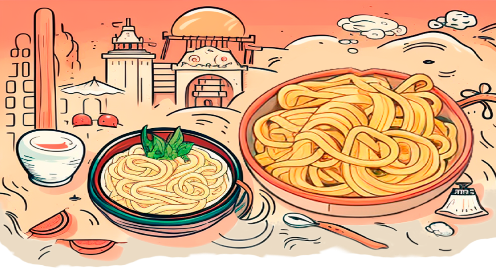
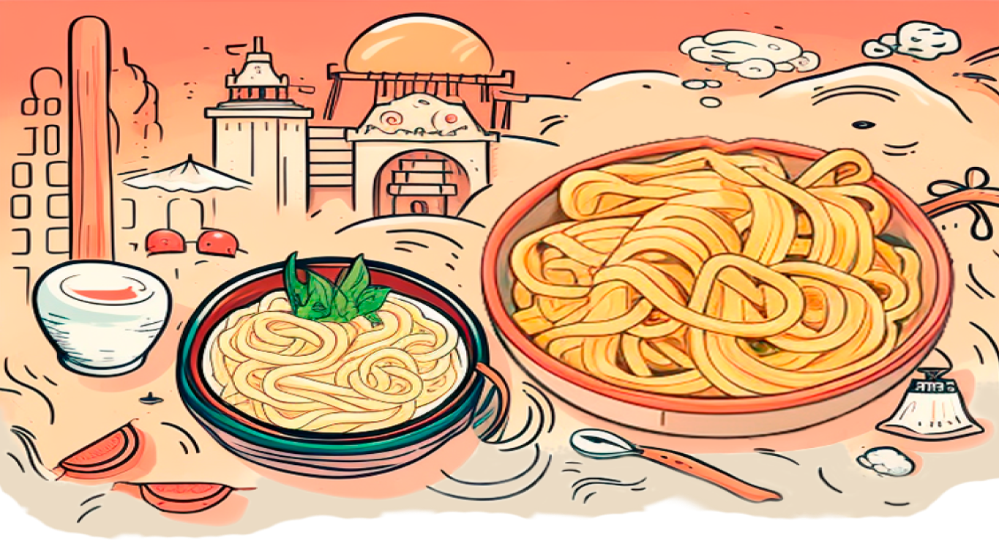

Remember that the choice of noodles can significantly impact the overall character of your ramen dish. Whether you prefer thin, thick, or even non-traditional noodles, it's all about personal preference and the type of ramen you want to create. Here are the most common noodles for ramen:

Step 2 - CHOOSE YOUR FAVORITE NOODLES


After choosing your noodles and while the broth simmers, cook your ramen noodles according to the package instructions. Fresh noodles usually take about 2-3 minutes, while dried noodles may take a bit longer. Drain and set aside.
Soba Noodles
Soba noodles, made from buckwheat flour and wheat flour, are
occasionally used in fusion-style.
Chukamen Noodles
These are the standard ramen noodles and are characterized by
their medium thickness and curly appearance. They are
versatile and work well with various broths and
toppings.
Udon Noodles
Udon noodles are thick and chewy wheat noodles that are not
as common in ramen as chukamen but can still be used in
certain regional ramen styles, such as Nagoya-style
ramen.
Somen noodles are very thin wheat noodles, much thinner than traditional ramen noodles. They are more commonly used in chilled noodle dishes but can occasionally be found in ramen variations.
Glass noodles work well in noodle soups because they soak up the flavors of the broth and provide a pleasant chewy texture. While this dish may not be a traditional ramen, it can be a delicious and unique variation. They are typically featured in various Asian cuisines, including Chinese, Thai, and Korean dishes.
Shirataki Noodles
These translucent noodles are made from konjac yam or tofu
and are almost calorie-free. They are used in low-carb or
low-calorie ramen dishes as a substitute for traditional wheat
noodles.